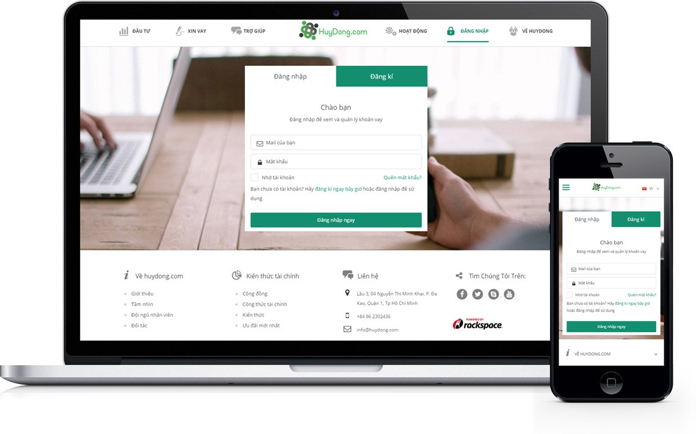

HuyDong is a peer-to-peer lending online marketplace for personal loans in Vietnam. HuyDong was founded in 2015 by Roy Nguyen, Chris Le and Vince Nguyen, with a mission to bridge the gap between unbanked/underbanked individuals and investors by creating accessible channel for individuals to acquire loan financing and for investors to earn solid fixed-income returns. We provide individuals with affordable credit from investors through a secured, risk-controlled process without going through traditional intermediary banks.
HuyDong is a subsidiary of Finsom Joint Stock Company, a registered entity.